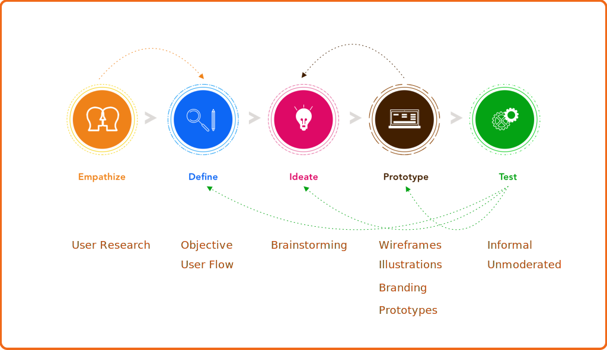

Context
Fitted was created as a requirement for Careerfoundry’s UI for UX Specialization course. Primary specs detailed in the project brief were a mobile first approach to a fitness app that caters to fitness beginners and all levels of tech savvy. The market for fitness apps is oversaturated, with established apps falling into different categories like short workouts, workouts on demand, nutrition, activity tracking, and music. The challenge with Fitted is to stand out while catering to beginners by providing them tools to keep them motivated so the app blends with their lifestyle.
Objective
Primary Goal
Motivate people into an exercise routine that suits their level, schedule, and interests.
Questions to be answered
- What features do beginner users really want in a fitness app?
- What are proven design patterns that keep users motivated ? What patterns annoy users ?
- What causes users to stop exercising ?
- What are the most effective search criteria to keep the app personalized ?
Process
User centered Design Thinking and mobile first design were the main focus of the app.
User Flow

For user flow, I kept track of what exactly a beginner would need from a customized app that was user friendly.
Typical patterns from a perspective of an engaging fitness app -
- Efficient and value adding onboarding.
- Robust search - Multiple levels and options for exercises.
- Flexibile scheduling and reminders.
- A gaming and social aspect to keep the user motivated.
Sketches & Low Fidelity Wireframes


- Map out the functionality of the app - The onboarding section took shape during this phase of design and really came to be a major feature of the app. I got an idea of what the search feature would look like and what primary menu items would be. Wireframing also gave me a idea of which features to prioritize.
- Recognize constraints - Time. With these early sketches, I quickly recognized that executing a high fidelity prototype with good research baked in would require sacrificing the complexity of some of the features, or entire features altogether I had envisioned in the user flow. A MVP was the first goal, sticking to the project brief, while allowing for feedback based improvement before adding bells and whistles.
- Catch usability problems early - With the rapid sketches, I was starting to realize that font size would be a factor that I would have keep a close eye on when it came to layouts. Being new to mobile design, I needed to make sure that the font was not too small to read on the screen and that the layout accounted for this.
Moodboards


Logo
The logo for fitted is a stylized take on the letter 'F'. The use of primary or secondary colors is meant to gather attention to the brand.
Typography
The primary typeface, Futura has an appearance of efficiency and forwardness and uses simple geometric forms: near-perfect circles, triangles and squares. It is also easy to read from a distance. Avenir, an organic interpretation of the geometric style, even in color and suitable for extended text is used for body copy and accents or moments of discovery.
Color
Since boldness was a big theme with the design, I used a complementary set of lively colors from the moodboards. These choices signify activity, positivity, peace and change.


Illustrations


High Fidelity Screens


Responsive

I approached the design process with a Mobile first strategy, but the idea of Fitted is of an app that can handle multiple screen sizes well, so responsive and wearable design were constant aspects of the creative process. While I would have been happy if I could have begun the design process with a responsive approach, the grid system allowed me to adapt the design to different sized screens.
Interactions & Gestures
Interactivity and motion exploration were high priority for the design of this app. I was particular about showcasing animation skills during this project. The gestures run smooth and most importantly, works with the vibe of the app.

Animation
Onboarding
Fitted has an extensive, fun and interactive onboarding section that collects relevant information to personalize user experience. This section also offers a glimpse all the features that the app provides. The user can opt out of onboarding at any point in the process.
Scheduling
Users can search for exercises based on keywords and explore the exercise in detail on the Info page for a Step by Step breakdown. Users can then proceed to schedule their desired sessions easily by using the calendar to set up a workout plan.
Step By Step Instructions
Users can get a detailed breakdown of the steps involved in an exercise by using the Info button on the Exercise screens.
Peaks
- Research
-
There are tons of fitness apps on the market. I spent a considerable amount of time researching them. I found patterns that worked well and some that did not. The onboarding on Fitted is an example of a good feature that follows proven patterns while being unique as a result of the research. It is detailed, asks extremely relevant questions for a truly customized app experience while being optional.
- Skills - Research, creative thinking, understanding the market.
- Process - Competitive analysis.
- Solution - Spend time in the research phase finding patterns that work well and apply it appropriately. Continue refining till project delivery. Learn More
- Illustrations & Animation
- Flatish design and illustrations offer a sense of fun and approachability to content, which is the vibe I wanted with Fitted.
As a result, I was particular about showcasing my illustration and animation skills during this project. I was very organized with time in that sense and was able to achieve the goals that I had set. The illustrations are stylized, the animation smooth and most importantly, works with the vibe of the app.
- Skills - Illustrations, Animation.
- Process - Creative thinking, Visualization.
- Solution - Organize time efficiently to make the visuals match the vibe of the app, are stylized and use them with relevance. Learn More
Valleys
- Typography
-
Being new to mobile first design, I took a bit of a risk with Futura as the font family for titles & headers. I spent too much time trying to find the perfect font(s) and ended up second guessing myself a lot. While I am happy with Avenir as the secondary font choice, I am not sure Futura was the correct choice for Fitted and if a second font was required at all.
- Skills - Visual Design patterns.
- Process - Branding.
- Skill Gap - Applying good typography patterns in mobile design.
- Solution - Spend time on gaining knowledge of typography patterns for mobile rather than spending time with trial and error in the prototyping phase. Learn More
- Accessibility
- Accessibility was an afterthought for Fitted. While I was lucky that my choice of colors did not require major changes to fit AA contrast guidelines, I was not able to implement other WCAG guidelines like the perceivable, operable and other sections.
- Skills - Accessibility feature design.
- Process - Implementing accessibility after build of high fidelity prototype.
- Skill Gap - Applying good mobile design patterns.
Potential Improvements
- Rapid Prototyping
-
I jumped to digital prototyping quickly as I was concerned about how refined I wanted the initial wireframes to look. I did some sketches initially. It would be helpful to nail down details in quick sketches versus spending much longer doing the same in the digital realm.
- Skills - Wireframes.
- Process - Creative thinking, Visualization.
- Skill Gap Making efficient use of low fidelity wireframes, time management.
- Solution - Spend a little more time with paper and pen(cil).
- Design Feedback
- I spent a lot of time trying to finalize my colors and typography without feedback. I received constructive feedback when I asked for it. I am very happy with the theme that I chose, but it would have been more efficient to reach out earlier in the design process.
- Skills - Visual Design patterns.
- Process - Creative thinking, Visualization.
- Skill Gap Time management.
- Solution - Ask for feedback, early and often.
- Design Patterns on multiple OS
-
While I did refer to Material Design and iOS design patterns during the design process, I was not able to fully implement them for both.
- Skills - Knowledge of iOS and Material Design Guidelines.
- Process - Design Patterns.
- Skill Gap - Applying good Knowledge of iOS and Material Design Guidelines.
- Solution - Spend time on gaining knowledge of iOS and Material Design Guidelines and apply.